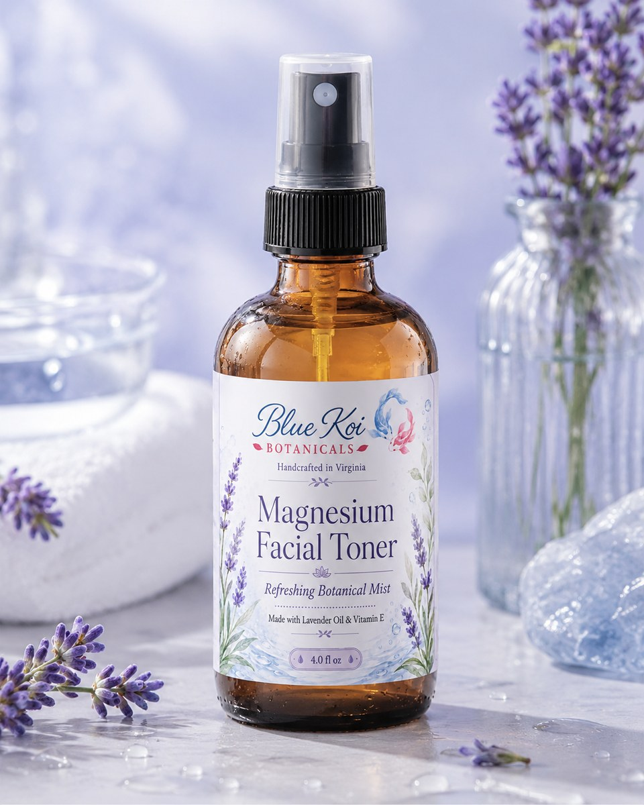

Handcrafted in Virginia
Botanical care for slow, beautiful rituals.
Blue Koi Botanicals creates small-batch salves, body oils, lip balms, and facial care products with premium botanical ingredients, refined scents, and a grounded apothecary feel.

The collection
Seven products, one calm skincare ritual.
Choose a focused topical salve, a signature body oil scent, a pocket-sized lip balm, or a refreshing facial toner. Each page includes ingredients, use guidance, and product details.

CBD Salve
$35A rich, handcrafted topical salve made with premium hemp-derived CBD isolate, nourishing butters, and cooling botanical oils.
Explore product →
Lavender Body Oil
$19A soft, floral body oil created for relaxed, everyday moisture with a calm lavender-forward aroma.
Explore product →
Eucalyptus Body Oil
$19A crisp, spa-inspired body oil with eucalyptus and refreshing spearmint for a clean botanical scent.
Explore product →
Jasmine Body Oil
$19A romantic floral body oil with jasmine and soft ylang ylang for an elegant, polished scent.
Explore product →
Cedarwood Vanilla Body Oil
$19A warm, cozy body oil with grounding cedarwood and smooth vanilla for a rich, comforting scent.
Explore product →
Magnesium Facial Toner
$16A refreshing facial mist made with magnesium flakes, distilled water, coconut oil, vitamin E oil, and lavender oil.
Explore product →
Botanical Lip Balms
$7 eachPocket-sized botanical lip balms in Eucalyptus Spearmint and Honey Lavender, made for soft everyday care.
Explore product →Small-batch formulas made to feel thoughtful, polished, and personal.
Clear ingredient lists and simple formulas without inflated claims.
Lavender, eucalyptus, jasmine, and cedarwood vanilla each have their own distinct identity.
Elegant packaging designed to feel at home in a spa, boutique, or daily routine.